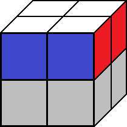
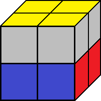

RKS - Rubik Kocka Solver
 Home
Home Bemutatkozás
Bemutatkozás Algoritmus
Algoritmus Iskolánk
IskolánkKirakó algoritmus
130 elágazás 1200 sor.
A kocka kirakása egy úgynevezett "Amatőr" módszerrel történik. Sajnos a módszer természeténél fogva az algoritmus nem túl "effektív", 40-77 lépés között képes kirakni a kockát.
Az algoritmus működése:
1. Fehér oldal kirakása oldalsó színekkel együtt
2. Sárga oldal kirakása (Itt az ortega metódusból használtam algoritmusokat)
3. A 2. sor rendezése színhelyesen.
Fehér oldal
Ez volt a legnehezebb lépés a kocka kirakásánál hiszen az algoritmus if-es szerkezetekkel operál, tehát gyakorlatilag minden lehetséges előfordulást lekellett kezelni feltételek segítségével. Ez a gyakorlatban azt jelenti, hogy 4 db fehér sarok kockát kellett helyre rakni. Mivel ezek sarok kockák 2 másik színnel együtt fognak előfordulni mindig és oldalt az első sornak is stimmelnie kell ennél az algoritmusnál sok fejfájást okozott a megoldás.
A megoldás végül 4db ifes szerkezet lett a 4 kocka minden lehetséges előfordulásával. Az 1. 24 elágazás, a 2. 21 elágazás, a 3. 18 elágazás, a 3. 15 elágazásból áll. Könnyen belátható, hogy a kocka 8 sarok kockából áll mi mindig egy bizonyos tulajdonságú kockát keresünk és azt a megfelelő helyre akarjuk rakni. Tehát az algoritmus bejárja a táblákat vagyis a kockát és ha talál egy F karaktert a kiegészítő színekkel a megadott forgatások segítségével a helyére rakja. A
Sárga oldal
A sárga oldalnak mindig párhuzamosan kell lennie a fehérre.A megoldásnál az Ortega félprofi módszerből ismert 7 előfordulási lehetőséget és azokra adott algoritmusokat használtam fel. Ugye az a 7 előfordulási lehetőség valójában 7 * 4 = 28 mivel a sárga a variációk bárhogy ellehetnek forgatva. Az ember számára elég ha 7 variációt megadunk egy kirakási segédletnél a többit felfogja ismerni, hogy igen ez ugyanaz csak 45 fokkal elvan forgatva. Ezeket a programban mind if-es szerkezetek formájában logikai kapcsolatokkal kellett kezelni. Így egy if-es szerkezettel melynek 28 elágazása lett. Az összes permutációt lefedve
2. Sor rendezése

Az utolsó sor rendezését szintén egyetlen if-es szerkezettel lett megoldva mely 24 elágazásból áll, mivel ennyi lehetséges eset van ennél a lépésnél. Azért 24 mert ugye a sarok kockák sárga színeit helyre raktuk így 4 lehetséges színpárunk maradt ami a 4! = 24 lehetséges variációt hagyva nekünk.